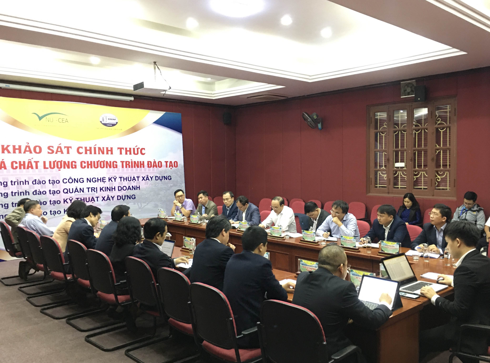

Khai mạc đợt khảo sát chính thức phục vụ đánh giá ngoài 4 chương trình đào tạo
(TLU) – Ngày 26/12, Trường Đại học Thủy lợi diễn ra Khai mạc đợt khảo sát chính thức phục vụ đánh giá ngoài 4 chương trình đào tạo gồm Công nghệ Kỹ thuật xây dựng, Kỹ thuật xây dựng, Kinh tế, Quản trị kinh doanh

Các đại biểu tham dự lễ khai mạc chụp hình lưu niệm
Tham dự buổi lễ, về phía Trung tâm Kiểm định chất lượng giáo dục – Đại học Quốc gia Hà Nội có TS Tạ Thị Thu Hiền – Phó giám đốc phụ trách Trung tâm; TS Đinh Văn Toàn – Phó giám đốc – Chủ tịch Hội đồng kiểm định và là thành viên thường trực Đoàn ĐGN.
Về phía đoàn chuyên gia ĐGN có GS.TS Nguyễn Hữu Đức – Trưởng đoàn; GS.TS Hoàng Bá Thịnh – Phó trưởng đoàn cùng các thành viên là thư ký, giám sát viên, quan sát viên.
Về phía Trường Đại học Thủy lợi có GS.TS Trịnh Minh Thụ - Hiệu trưởng, đại diện Đảng ủy, Ban giám hiệu, lãnh đạo các Phòng, ban chức năng; Khoa Công trình, Khoa Kinh tế và Quản lý, các thành viên Hội đồng Tự đánh giá Trường cùng đông đảo cán bộ viên chức, giảng viên và sinh viên.

Lễ khai mạc đợt khảo sát chính thức diễn ra tại HT T45
Phát biểu tại lễ khai mạc, GS.TS Trịnh Minh Thụ - Hiệu trưởng Trường Đại học Thủy lợi khẳng định: Nhà trường xác định sứ mệnh của mình là một trung tâm nghiên cứu khoa học và đào tạo có uy tín trong các lĩnh vực về khoa học, kỹ thuật, kinh tế và quản lý, đặc biệt là lĩnh vực thủy lợi, thủy điện, tài nguyên nước, môi trường, phòng chống và giảm nhẹ thiên tai.
Trong những năm qua, Trường Đại học Thủy lợi xác định nhiệm vụ của mình là không ngừng nâng cao chất lượng đào tạo, khẳng định lời cam kết với toàn xã hội. Vì vậy, Trường đã đầu tư nhân lực, vật lực phục vụ công tác kiểm định trường, kiểm định các chương trình đào tạo. Nhà trường vui mừng là cơ sở giáo dục đầu tiên trong cả nước hoàn thành kiểm định chất lượng theo thông tư 12/2017 của Bộ GD&ĐT đạt kết quả cao nhất với 95,5% số tiêu chí đạt chuẩn. Hoàn tất và nhận chứng chỉ 2 chương trình tiên tiến theo chuẩn AUN-QA; 3 chương trình đạt kiểm định Trung tâm kiểm định chất lượng giáo dục – Đại học Quốc gia Hà Nội.
Trong quá trình tự đánh giá, Nhà trường đã thực hiện nghiêm túc theo công văn số 1075 của Bộ GD&ĐT từ việc thành lập hội đồng đến các Ban thư ký, Ban chuyên môn; công tác lấy ý kiến phản hồi từ các bên liên quan; phân tích các số liệu; viết và công khai các báo cáo tự đánh giá…

GS.TS Trịnh Minh Thụ - Hiệu trưởng phát biểu khai mạc

Đại diện TT kiểm định chất lượng giáo dục ĐHQGHN công bố quyết định thành lập đoàn chuyên gia ĐGN 4 chương trình đào tạo của Trường Đại học Thủy lợi
Theo TS Tạ Thị Thu Hiền – Phó Giám đốc Trung tâm kiểm định chất lượng giáo dục ĐHQGHN cũng cho biết: Kiểm định chất lượng được coi như một giải pháp quan trọng nhằm cải tiến, nâng cao chất lượng giáo dục, quản trị đại học. Việc tham gia kiểm định chất lượng với các chương trình đào tạo là minh chứng cho thấy hoạt động đảm bảo chất lượng được quan tâm, triển khai từ gốc trong mọi hoạt động của Nhà trường.
TS Tạ Thị Thu Hiền cũng chúc mừng khi Trường Đại học Thủy lợi xếp thứ 23 trong số 30 trường đại học của Việt Nam có tổng số bài báo WoS & Scopus và số lần trích dẫn nhiều nhất trong giai đoạn 2014-2018. Với kết quả này thì trong đợt khảo sát chính thức 4 chương trình đào tạo thuộc Khoa Công trình và Khoa Kinh tế và Quản lý, Đoàn chuyên gia sẽ phải nhìn nhận, đánh giá từ góc độ tổng thể nhưng cũng phải chi tiết với từng chương trình đào tạo thông qua các nghiên cứu khoa học và đóng góp phục vụ cộng đồng…

TS Tạ Thị Thu Hiền – Phó Giám đốc Trung tâm kiểm định chất lượng giáo dục ĐHQGHN phát biểu
Sau lễ khai mạc và trong các ngày tiếp theo, Đoàn chuyên gia ĐGN sẽ tiến hành phỏng vấn các nhóm sinh viên, cựu sinh viên, doanh nghiệp tuyển dụng, các cán bộ quản lý, cán bộ hỗ trợ, giảng viên, lãnh đạo trường; tham quan các cơ sở vật chất phục vụ 4 ngành đào tạo là Kỹ thuật xây dựng công trình thủy, Kế toán, Quản lý xây dựng.

Phỏng vấn nhóm lãnh đạo
Trường Đại học Thủy lợi khẳng định tầm quan trọng của công tác kiểm định chất lượng giáo dục. Khảo sát chất lượng các chương trình đào tạo là việc làm ý nghĩa nhằm nâng cao chất lượng của Nhà trường, đồng thời đưa ra những khuyến nghị giúp các hoạt động trong trường được cải thiện và tốt hơn.
Bích Việt